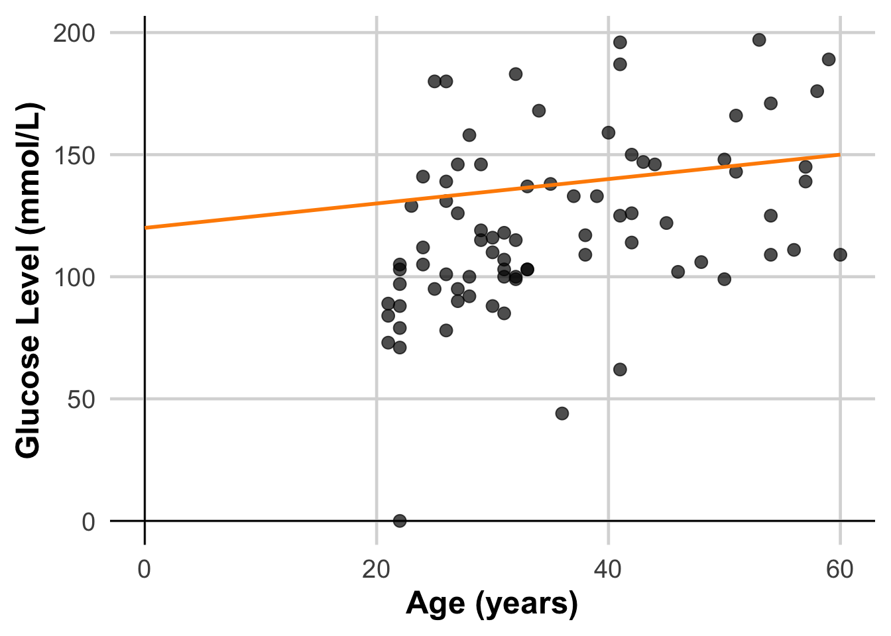
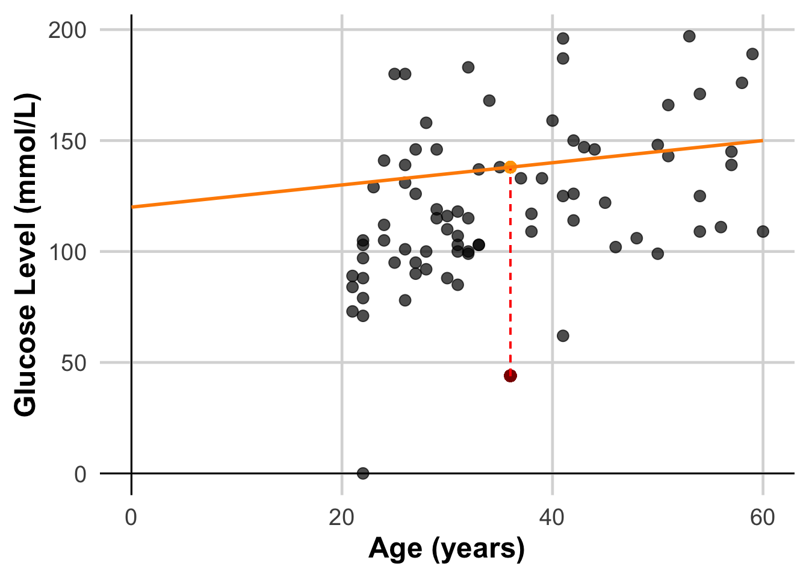

(2) Loss functions
Load diabetes dataset (already available by installing package mlbench). This is a toy dataset that has been extensively used in many machine learning examples
data("PimaIndiansDiabetes")In the environment now you should see PimaIndiansDiabetes dataframe loaded
Lets now select only two of this columns age and glucose and store it as a new dataframe
Recall this is the same thing as
Data <- PimaIndiansDiabetes[, c("age", "glucose")]We have 768 observations/rows, so lets cut it down to just 30, for the sake of easier visualization and take a look
DataSmaller <- Data[1:80,]
head(DataSmaller) age glucose
1 50 148
2 31 85
3 32 183
4 21 89
5 33 137
6 30 116Define “Best Fit” – Minimizing Error
The “best fit” line minimizes the average distance (error) between the predicted values and the actual data points. This error (or residual) for a single data point is calculated as:
\[ Residual = ActualValue - Predicted Value \]
Example with a Single Data Point
Let’s calculate the residual for a single data point in the dataset.
DataSmaller <- Data[1:80,]
# Calcualte error of line (y = 112 + 0.5x)
DataSmaller$line1 <- 120 + 0.5 * seq(0, 60, length.out = 80)
DataSmaller$linePredicted <- 120 + 0.5 *DataSmaller$age
ggplot(DataSmaller, aes(x = age, y = glucose)) +
geom_point(size = 3, color = "black", alpha = 0.7) + # Larger, colored points with some transparency
labs(
x = "Age (years)",
y = "Glucose Level (mmol/L)") +
geom_hline(yintercept = 0, color = "black", linewidth = 0.5) + # Horizontal line at y = 0
geom_vline(xintercept = 0, color = "black", linewidth = 0.5) +
theme_minimal(base_size = 18) + # Use a clean theme with larger base font size
theme(
plot.title = element_text(face = "bold", hjust = 0.5), # Center and bold title
plot.subtitle = element_text(hjust = 0.5), # Center subtitle
axis.title = element_text(face = "bold"), # Bold axis titles for readability
panel.grid.major = element_line(color = "grey85"), # Lighten grid for subtlety
panel.grid.minor = element_blank() # Remove minor grid lines for clarity
) +
geom_line(aes(y = line1, x = seq(0, 60, length.out = 80)), color = "darkorange", size = 1)Warning: Using `size` aesthetic for lines was deprecated in ggplot2 3.4.0.
ℹ Please use `linewidth` instead.
DataSmaller$linePredicted <- 120 + 0.5 *DataSmaller$age
# Get the predicted value for the first data point
predicted_value <- DataSmaller$linePredicted[63]
# Calculate the residual
actual_value <- DataSmaller$glucose[63]
residual <- actual_value - predicted_value
# Print results
cat("Actual Value:", actual_value, "\n")Actual Value: 44 cat("Predicted Value:", predicted_value, "\n")Predicted Value: 138 cat("Residual (Error):", residual, "\n")Residual (Error): -94 ggplot(DataSmaller, aes(x = age, y = glucose)) +
geom_point(size = 3, color = "black", alpha = 0.7) + # Larger, colored points with some transparency
geom_point(aes(x = DataSmaller$age[63], y = actual_value), size = 3, color = "darkred", alpha = 0.7) +
geom_point(aes(x = DataSmaller$age[63], y = predicted_value), size = 3, color = "orange", alpha = 0.7) +
geom_segment(aes(x = DataSmaller$age[63], y = actual_value, xend = DataSmaller$age[63], yend = predicted_value),
color = "red", linetype = "dashed") +
labs(
x = "Age (years)",
y = "Glucose Level (mmol/L)") +
geom_hline(yintercept = 0, color = "black", linewidth = 0.5) + # Horizontal line at y = 0
geom_vline(xintercept = 0, color = "black", linewidth = 0.5) +
theme_minimal(base_size = 18) + # Use a clean theme with larger base font size
theme(
plot.title = element_text(face = "bold", hjust = 0.5), # Center and bold title
plot.subtitle = element_text(hjust = 0.5), # Center subtitle
axis.title = element_text(face = "bold"), # Bold axis titles for readability
panel.grid.major = element_line(color = "grey85"), # Lighten grid for subtlety
panel.grid.minor = element_blank() # Remove minor grid lines for clarity
) +
geom_line(aes(y = line1, x = seq(0, 60, length.out = 80)), color = "darkorange", size = 1)
Sum of Errors – squares or absolute value?
Errors can be both positive and negative, so simply summing them would lead to cancellation, which isn’t meaningful. Two common methods are:
1.Sum of Squared Residuals: This squares each error, avoiding cancellation and penalizing larger errors more.
2.Absolute Values of Residuals: Taking absolute values also prevents cancellation, but doesn’t penalize large errors as heavily as squaring.
Different Error Metrics
Let’s calculate different error metrics
# Calculate Residuals
residuals <- DataSmaller$glucose - DataSmaller$linePredicted
# Define a function to calculate error metrics
calculate_errors <- function(residuals) {
# Sum of Squared Residuals (SSR)
SSR <- sum(residuals^2)
# Mean Squared Error (MSE) – equivalent to L2 loss
MSE <- (SSR)/dim(DataSmaller)[1]
# Root Mean Squared Error (RMSE)
RMSE <- sqrt(MSE)
# Mean Absolute Error (MAE) – equivalent to L1 loss
MAE <- mean(abs(residuals))
# Print the results
cat("Sum of Squared Residuals (SSR):", SSR, "\n")
cat("Mean Squared Error (MSE):", MSE, "\n")
cat("Mean Absolute Error (MAE):", MAE, "\n")
# Return a list of the error metrics
return(list(SSR = SSR, MSE = MSE, RMSE = RMSE, MAE = MAE))
}
error_metrics <- calculate_errors(residuals)Sum of Squared Residuals (SSR): 111807
Mean Squared Error (MSE): 1397.588
Mean Absolute Error (MAE): 30.575 Choosing a loss
Deciding whether to use MAE or MSE can depend on the dataset and the way you want to handle certain predictions. Most feature values in a dataset typically fall within a distinct range.Values outside the typical range and would be considered an outlier.
When choosing the best loss function, consider how you want the model to treat outliers. For instance, MSE moves the model more toward the outliers, while MAE doesn’t. L2 loss incurs a much higher penalty for an outlier than L1 loss.

Regardless, the functions that we will use that implement linear regression algorithms (e.g lm()) take into account MSE error, so this will not be part of any decision we have to take. The reason for this is that MSE has benefits that MAE has not in terms of optimizimg it! We will learn about this later.
Outliers
In data pre-processing we discussed outliers, and here we will try and visually understand their influence when modeling.
# Fit a linear model
model_MSE <- lm(glucose ~ age, data = DataSmaller)
DataSmaller$predictions_MSE <- predict(model_MSE, DataSmaller)
print(model_MSE$coefficients)(Intercept) age
73.677460 1.330072 Calculate residuals
residuals_MSE <- DataSmaller$glucose - DataSmaller$predictions_MSE
residuals_MSE <- model_MSE$residuals # can also extract them directly from the model!Calculate all losses
error_metrics_MSE <- calculate_errors(residuals_MSE)Sum of Squared Residuals (SSR): 81632.69
Mean Squared Error (MSE): 1020.409
Mean Absolute Error (MAE): 24.23672 Plot linear regression model
MSE <- ggplot(DataSmaller, aes(x = age, y = glucose)) +
geom_point(color = "blue") +
geom_abline(intercept = coef(model_MSE)[1], slope = coef(model_MSE)[2], color="red",
linetype="dashed", size=1.5) +
labs(title = "MSE without Outliers", x = "Age", y = "Glucose")Add Outliers
# Introduce outliers
DataOutliers <- DataSmaller
DataOutliers$glucose[c(1, 3, 5)] <- DataOutliers$glucose[c(1, 3, 5)] * 3 # Changing 3 readings into 3 times their value!
model_MSE_out <- lm(glucose ~ age, data = DataOutliers)
DataOutliers$predictions_MSE_out <- predict(model_MSE_out, DataOutliers)
#Calculate residuals
residuals_MSE_out <- DataOutliers$glucose - DataOutliers$predictions_MSE_out
residuals_MSE_out <- model_MSE_out$residuals # can also extract them directly from the model!
#Calculate loss
error_metrics_MSE_out <- calculate_errors(residuals_MSE_out)Sum of Squared Residuals (SSR): 430818.6
Mean Squared Error (MSE): 5385.232
Mean Absolute Error (MAE): 38.6216 MSE_Out <- ggplot(DataOutliers, aes(x = age, y = glucose)) +
geom_point(color = "blue") +
geom_abline(intercept = coef(model_MSE_out)[1], slope = coef(model_MSE_out)[2], color="red",
linetype="dashed", size=1.5) +
labs(title = "MSE Outliers", x = "Age", y = "Glucose")
As key learning points: MAE vs MSE?
- Look at the scales! - MAE is more interpretable as it gives a more straightforward interpretation of the “average error,” as it represents the median prediction error.
- Robustness to Outliers: MAE is less sensitive to outliers than MSE because it doesn’t square the errors. But the functions used to implement linear regression use mostly MSE, because MAE is not differentiable, so it requires specialised optimisation algorithms, which are less computationally efficient than least-squares (MSE) for large datasets as MSE is differentiable and so easier to optimize. (we will learn about what this means later!)